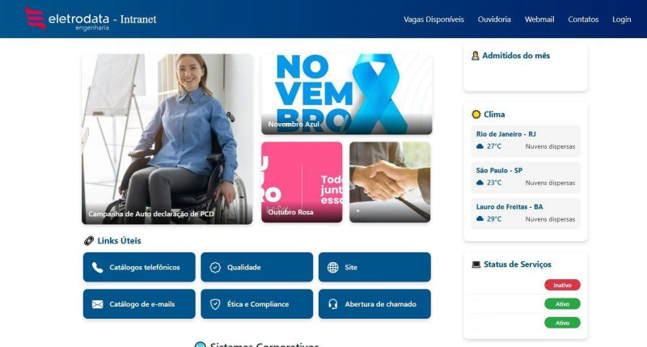
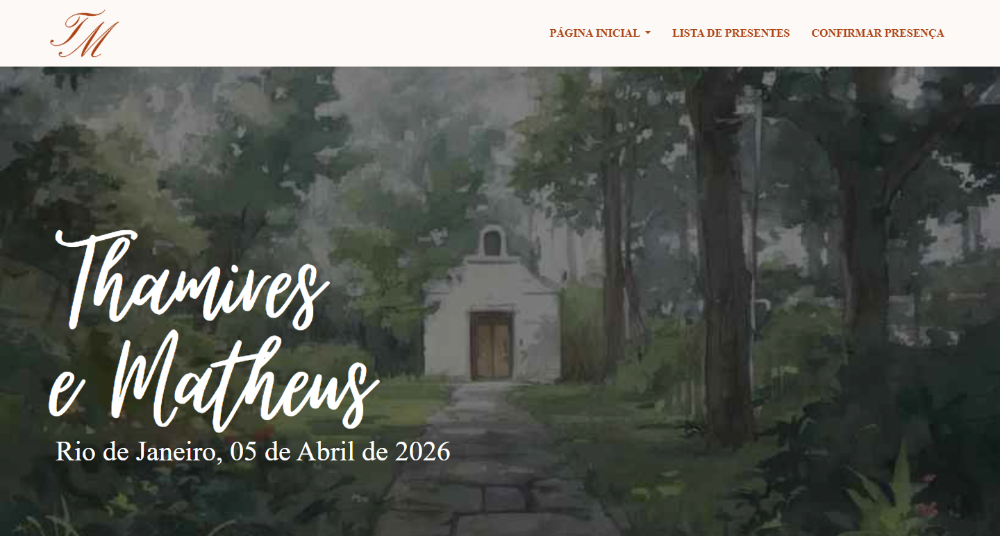

Matheus Siqueira
builds full-stack systems that hold up.
Matheus Siqueira
constrói sistemas full-stack sólidos e confiáveis.
Full-Stack Developer · Python · Django · React · Security Desenvolvedor Full-Stack · Python · Django · React · Segurança
{
"focus": "full-stack web & mobile development",
"stack": ["Python", "Django", "React", "React Native", "PostgreSQL"],
"security": ["COFPS certified", "CTFs", "responsible disclosure"],
"currently_learning": ["AWS", "cybersecurity"]
}
Where I've workedOnde eu trabalhei
Four years building web and mobile applications, from freelance projects to corporate systems. Quatro anos desenvolvendo aplicações web e mobile, de projetos freelancer a sistemas corporativos.
IT Support AssistantAssistente de Suporte em TI
Eletrodata Engenharia- Built a corporate intranet system from scratch using Django — auth, access control, internal comms
- Wrote Python automations that cut manual document processing time across 100+ employees
- Administered Active Directory and kept Windows/Linux environments running
- Led the configuration and rollout of the Bitdefender antivirus across the corporate environment
- Desenvolvi um sistema de intranet corporativa do zero usando Django — autenticação, controle de acesso e comunicação interna
- Criei automações em Python que reduziram o tempo de processamento manual de documentos para mais de 100 colaboradores
- Administrei o Active Directory e mantive ambientes Windows/Linux em funcionamento
- Fui responsável pela configuração e implementação do antivírus Bitdefender no ambiente corporativo
IT InternEstagiário de TI
Eletrodata Engenharia- Resolved technical support tickets and assisted end users in a corporate environment
- Installed and configured operating systems and business software
- Supported basic network and IT infrastructure administration
- Atendi chamados de suporte técnico e usuários em ambiente corporativo
- Instalei e configurei sistemas operacionais e softwares corporativos
- Apoiei a administração básica de rede e infraestrutura de TI
Freelance DeveloperDesenvolvedor Freelancer
IndependentAutônomo- Built web and mobile applications, websites, and custom systems using Python, Django, JavaScript, React, and React Native
- Developed REST APIs, authentication flows, access control, external integrations, and relational database solutions
- Evolved from early web projects to complete applications including e-commerce, inventory management, mobile apps, and AI-integrated platforms
- Worked on projects from development to deployment, version control, and production use
- Desenvolvi aplicações web e mobile, sites e sistemas personalizados utilizando Python, Django, JavaScript, React e React Native
- Desenvolvi APIs REST, fluxos de autenticação, controle de acesso, integrações externas e soluções com bancos de dados relacionais
- Evoluí de projetos web iniciais para aplicações completas, incluindo e-commerce, gestão de estoque, aplicativos mobile e plataformas integradas com IA
- Atuei nos projetos desde o desenvolvimento até deploy, versionamento e utilização em produção
What I've builtO que eu construí
Real systems, shipped and used — not tutorials. Sistemas reais, usados de verdade — não tutoriais.

Bancou
Gamified Android app for Brazilian civil-service exam prep, live on Google Play. Django REST API, React Native client, and an AI pipeline that turns exam PDFs into structured questions.
App Android gamificado para estudo de concursos públicos, já disponível na Google Play. API REST em Django, app em React Native e um pipeline de IA que transforma PDFs de provas em questões estruturadas.
AppUnited
Full REST API and React Native mobile app, built end-to-end for a church community.
API REST e app mobile em React Native, construídos do zero para a comunidade de uma igreja.

Corporate IntranetIntranet Corporativa
Internal platform for announcements, documents, and access control, used company-wide.
Plataforma interna para avisos, documentos e controle de acesso, usada por toda a empresa.

Wedding WebsiteSite de Casamento
Custom site with payment integration, deployed and hosted on a self-managed VPS.
Site personalizado com integração de pagamento, hospedado em uma VPS auto-gerenciada.
Other projects & labsOutros projetos e laboratórios
Smaller builds and study projects — where a lot of the actual learning happened.
Projetos menores e exercícios de estudo — onde boa parte do aprendizado real aconteceu.
Kings Men's
E-commerce style store built with Django to practice models, cart logic, and admin flows.
Loja no estilo e-commerce construída com Django para praticar models, carrinho e fluxo de admin.
Recipe AppReceitas Supremas
CRUD web app for browsing and managing recipes.
Aplicação web com CRUD para navegar e gerenciar receitas.
MoviesLib
Movie catalog app consuming an external API.
Catálogo de filmes consumindo uma API externa.
Mario Jump
Small browser game built to practice vanilla JS logic and game loops.
Jogo simples no navegador para praticar lógica em JS puro e game loop.
Login ScreenTela de Login
UI/UX study — building an authentication screen from a design reference.
Estudo de UI/UX — construção de uma tela de autenticação a partir de uma referência de design.
Mill S.A.
Institutional site built for a fictional/practice company brief.
Site institucional construído a partir de um briefing fictício/de prática.
Previous PortfolioPortfólio Antigo
An earlier version of this portfolio — kept as a record of progress.
Uma versão anterior deste portfólio — mantida como registro de evolução.
SecuritySegurança
A developer who thinks like an attacker: certified, practicing in CTFs, and building with security in mind. Um desenvolvedor que pensa como um atacante: certificado, praticando em CTFs e construindo com segurança desde o início.

COFPS
Certified Online Fraud Prevention Specialist, issued by Hack & Fix Academy.
Certified Online Fraud Prevention Specialist, emitida pela Hack & Fix Academy.
Santander Cybersecurity Bootcamp
Bootcamp Santander de Cibersegurança
Cybersecurity from Zero to Practice, on DIO. Expected completion on December 20.
Cibersegurança do Zero à Prática, na DIO. Conclusão prevista para 20 de dezembro.
Hands-on practicePrática
Real findings, CTF write-ups, and security decisions made inside my own projects.
Achados reais, write-ups de CTF e decisões de segurança tomadas nos meus próprios projetos.
Responsible disclosureDisclosure responsável
Found and reported a critical flaw in a company's web app during a hiring process: exposed API credentials and an indexed admin panel. The team fixed it after the report.
Encontrei e reportei uma falha crítica na aplicação web de uma empresa durante um processo seletivo: credenciais de API expostas e painel administrativo indexado. A equipe corrigiu após o reporte.
Pickle Rick
Write-up of a web-exploitation CTF challenge — enumeration to privilege escalation.
Write-up de um desafio CTF de exploração web — da enumeração até a escalação de privilégio.
FowSniff
CTF write-up focused on credential hunting and service enumeration.
Write-up de CTF focado em busca de credenciais e enumeração de serviços.
Bancou
Server-side grading, ECDSA-verified rewarded ads, scoped rate limiting, restricted CORS, and a full git-history audit for leaked secrets before launch.
Correção no servidor, anúncios premiados verificados por ECDSA, rate limiting por escopo, CORS restrito e auditoria do histórico git atrás de segredos vazados antes do lançamento.
Pentest practicePrática de pentest
Regular CTFs on TryHackMe and attack/defense scenarios on Windows and Linux VMs in VirtualBox.
CTFs frequentes no TryHackMe e cenários de ataque e defesa em VMs Windows e Linux no VirtualBox.
Offensive security coursesCursos de segurança ofensiva
Offensive Security and Web Pentest paths (Alura), Intro to Hacking and Pentest 2.0 (Solyd).
Formação em Segurança Ofensiva e Pentest web (Alura), Introdução ao Hacking e Pentest 2.0 (Solyd).